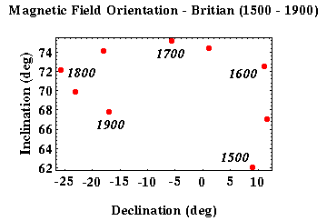

Secular Variations of the Earth's Magnetic Field
The fact that the Earth's magnetic field varies with time was well established several centuries ago. In fact, this is the primary reason that permanent magnetic observatories were established from which we have learned how the magnetic field has changed over the past few centuries. Many sources of historical information are available.
Shown below is a plot of the declination and inclination of the magnetic field around Britain from
the years 1500 through 1900.

At this one location, you can see that over the past 400 years, the declination has varied by almost 37 degrees while the inclination has varied by as much as 13 degrees. These changes are generally assumed to be associated with the Earth's main magnetic field. That is, these are changes associated with that portion of the magnetic field believed to be generated in the Earth's core. As such, solid earth geophysicists are very interested in studying these secular variations, because they can be used to understand the dynamics of the Earth's core.
To understand these temporal variations and to quantify the rate of variability over time, standard reference models are constructed from magnetic observatory observations about every five years. One commonly used set of reference models is known as the International Geomagnetic Reference Field. Based on these models, it is possible to predict the portion of the observed magnetic field associated with the Earth's main magnetic field at any point on the Earth's surface, both now and for several decades in the past.
Because the main magnetic field as described by these secular variations changes slowly with respect to the time it takes us to complete our exploration magnetic survey, this type of temporal variation is of little importance to us.